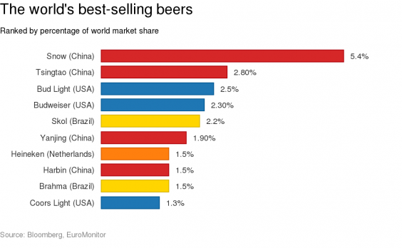

Whoever drinks beer, he is quick to sleep; whoever sleeps long, does not sin; whoever does not sin, enters Heaven! Thus, let us drink beer!
Agu Suur
Whoever drinks beer, he is quick to sleep; whoever sleeps long, does not sin; whoever does not sin, enters Heaven! Thus, let us drink beer!
According to a statista report, the vast majority of beer sold in the US is a light pale lager.
The situation is not better when looking at the rest of the world.

Using kaggle data on over 75,000 homemade beers, I trained a random forest classifier to predict 32 different beer styles based on alcohol content, bitterness and color.
load("../app/model.rda")
fit$results
## mtry Accuracy Kappa AccuracySD KappaSD
## 1 2 0.311875 0.2896774 0.03352160 0.03460295
## 2 3 0.305625 0.2832258 0.03096397 0.03196281
While an accuracy of 31% does not seem much at first, keep in mind the model is predicting 32 different styles of beer, many of which are very similar. For example, the only difference between an English and an American IPA is where the hops were grown!
You can find the BrewTree app at https://suur.shinyapps.io/brewtree/.
Let's explore the world of beer, and not get lost in a random forest :)